地政学
バマコは内陸国マリの政治中枢で、サヘルの治安、軍政後の移行、近隣国との回廊、国際支援の入口を引き受けます。ニジェール川と道路網が地方を結び、北部や中部の不安定さも首都の制度と暮らしへ影を落とします。
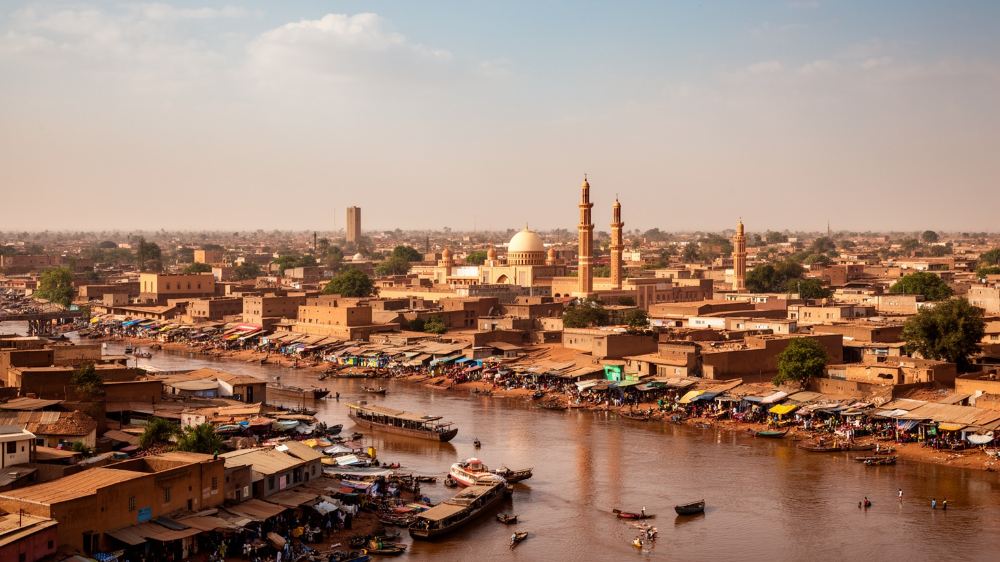
🇲🇱 マリ / バマコ首都地区 / World City Atlas
ニジェール川の両岸に広がるマリの首都です。官庁、橋、市場、バスターミナル、音楽、イスラムの礼拝、移民と送金、急成長する住宅地が、サヘルと内陸西アフリカをつなぐ都市圏に重なります。
都市の骨格
バマコはニジェール川の谷に沿って伸び、北岸と南岸を橋と幹線道路がつなぎます。内陸国マリの行政、物流、教育、金融、文化が集中し、地方からの移住者と近隣国への回廊が都市の速度を上げています。
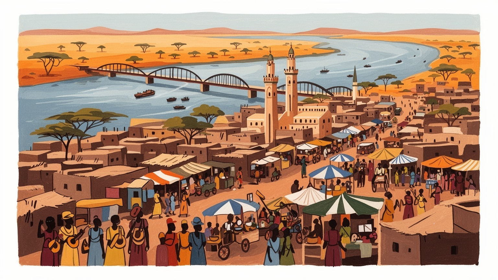
バマコは内陸国マリの政治中枢で、サヘルの治安、軍政後の移行、近隣国との回廊、国際支援の入口を引き受けます。ニジェール川と道路網が地方を結び、北部や中部の不安定さも首都の制度と暮らしへ影を落とします。
雇用は官庁、商業、物流、建設、教育、金融、交通、通信、市場、小規模加工に広がります。金や農産物の国の富は首都で取引されますが、若者の仕事、物価、非公式労働、家賃は家計に重くのしかかります。今も続く。
イスラムの礼拝、グリオの語り、マンデ音楽、バンバラ語、フランス語、地方出身者の食と儀礼が交差します。大モスク、市場、結婚式、音楽スタジオは、サヘルの歴史と若い都市文化を同時に響かせる場です。今も。
旅行者は国立博物館、大モスク、職人市場、川岸、丘の眺めを訪ねます。住民は渋滞、暑さ、排水、電力、水、住宅、治安、教育費に向き合いながら、家族と近所の助け合いで成長する首都を使い続けます。日々です。
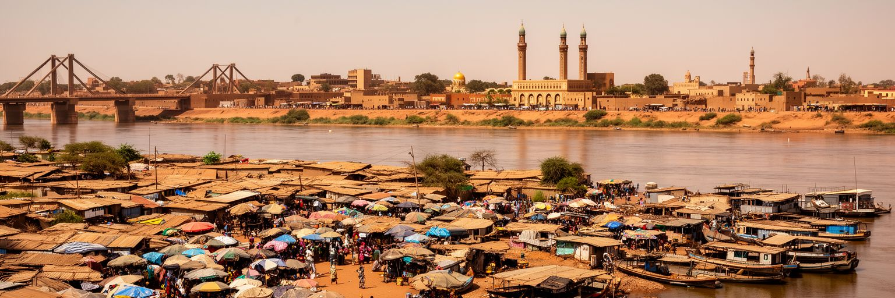
バマコを理解する入口は、ニジェール川の両岸に首都が広がっていることです。川は水辺の景色であるだけでなく、橋、道路、市場、漁、砂利採取、排水、洪水、郊外化を左右する都市の軸です。北岸の古い行政・商業地区と南岸の住宅地、大学、工業、バスターミナルは、複数の橋と幹線道路で結ばれます。朝夕の移動が集中すると、橋の混雑は学校、病院、官庁、商いの時間を一斉に遅らせます。雨季には河川と排水路の管理が低地の暮らしを試し、乾季には砂ぼこりと暑さが通勤や屋外労働を重くします。川沿いの開発は眺めのよい公共空間を生む可能性を持ちますが、無秩序な建設やごみの流入は水質と防災を悪化させます。バマコは海を持たない国の首都ですが、川を通じて内陸の農村、地方都市、サヘルの移動を受け止めます。橋を渡る人の流れを見ると、国家の中心が毎日の交通と水辺の管理に支えられていることが分かります。川はまた、都市の記憶を運びます。植民地期の街路、独立後の官庁、近年の住宅地が水面を挟んで並び、首都の成長が地形に刻まれています。船着き場や洗濯場、魚を売る小さな店も、川を生活の一部にしています。水辺を公共の財産として扱えるかが、成長する都市の質を左右します。川岸の歩きやすさ、植樹、排水、露店の場所を整えることは、防災と余暇を同時に育てます。
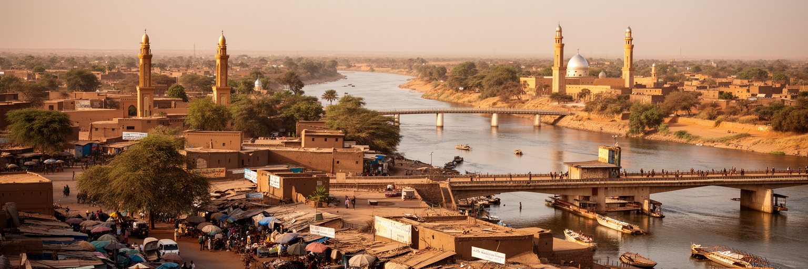
バマコはマリ国家の政治中枢であり、サヘルの不安定さを最も濃く受け止める都市です。北部と中部では武装勢力、民族間対立、避難、軍事作戦、国際部隊の撤収や再編が長く課題となり、首都の議論は地方の安全、統治、和解、資源配分に向かいます。官庁、大使館、国際機関、軍の施設、報道機関、市民団体は、市街地の限られた範囲に集まり、政治変動の時期には集会や交通規制が日常へ影響します。クーデター後の移行、選挙日程、憲法、地域機構との関係、ロシアや欧米との距離は、外交の話に見えても、物価、援助、教育、医療、雇用に響きます。市民にとって安全は抽象的な国家課題ではなく、夜の移動、地方から来た家族の安否、身分証明、警察検問、学校や市場へ行けるかという問題です。首都の安定だけが国の安定ではありませんが、バマコの制度が信頼されなければ地方との距離はさらに広がります。政治を読むには、広場のスローガンだけでなく、窓口の透明性、司法の独立、地方出身者の声が届く仕組みを見る必要があります。避難してきた家族や兵士の親族が暮らす首都では、遠い紛争も食卓の会話になります。安全保障は道路や市場の安心と切り離せません。地方の声を首都が聞けるかどうかは、和平の言葉を生活へ近づける第一歩です。行政の説明責任も重要です。ここが大きな課題です。
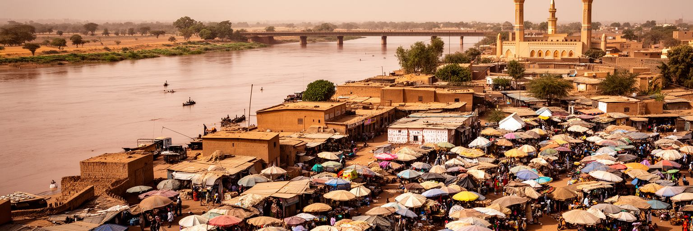
バマコの市場と物流は、内陸国の都市経済を具体的に見せます。港を持たないマリでは、ダカール、アビジャン、コナクリ、ロメなど外港へ向かう道路回廊が輸入品、燃料、機械、医薬品、建材、日用品を運び、首都の倉庫や卸売市場を通って家庭へ届きます。大市場や職人市場、地区の露店では、米、雑穀、野菜、肉、魚、布、携帯品、金物、宗教用品、輸入衣料が並び、価格は為替、燃料、国境手続き、雨季の道路、治安に敏感に反応します。荷下ろし、運転、倉庫、修理、露店、小売、屋台、モバイル送金は、公式統計に出にくい都市労働を支えます。商人の多くは少額の信用と親族ネットワークで仕入れ、顧客も少量買いで家計を調整します。市場は経済の場であると同時に、言葉、出身地、宗教、政治情報が交わる公共空間です。衛生、火災対策、排水、通路の安全、女性商人の権利が整わなければ、都市の生活基盤は弱くなります。バマコの市場を歩くことは、海から遠い首都がどれほど広い回廊に依存しているかを知ることです。国境での遅れや燃料不足は、数日後には店先の値札に現れます。だから物流政策は、家庭の食事と直結する生活政策でもあります。トラック運転手の安全、倉庫の管理、道路補修は地味ですが、首都の物価を安定させる基盤です。道の状態も日々の暮らしを大きく左右するのです。
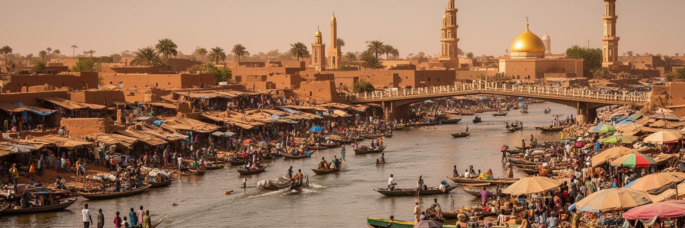
マリ経済は金、綿花、家畜、農産物、商業、送金に強く支えられ、バマコはその取引と政策の結節点です。金鉱は首都の外にありますが、許認可、税収、輸出、銀行、買い取り、警備、投資の判断はバマコの制度と企業を通じて動きます。綿花や穀物、家畜の価格も、農村の収入だけでなく、首都の食品価格、運送業、加工業、行政予算に影響します。都市の店や建設現場で見える現金の流れの背後には、雨の量、農村の治安、国際相場、道路の状態、地方市場の信用があります。資源国の首都では、輸出で得た富を教育、保健、道路、水道、地方サービスへどう戻すかが問われます。金の数字が伸びても、若者の仕事、農村の貧困、鉱山周辺の環境、安全な労働が改善しなければ、首都の繁栄は薄くなります。バマコの銀行街や商業地区は、農村と鉱山から集まる価値を扱う場所ですが、その価値が公共の信頼へ変わるかは別の問題です。経済を読む時は、GDPだけでなく、米の値段、綿花農家の収入、鉱山労働者の安全、税の使い道まで追う必要があります。農村の不作や治安悪化は、首都の屋台、学校給食、家賃にも波及します。資源と農業を分けずに見ることで、バマコの実際の経済が見えてきます。首都の消費は地方の生産に依存し、地方の収入は首都の政策判断に左右されます。ここに大きな課題があります。
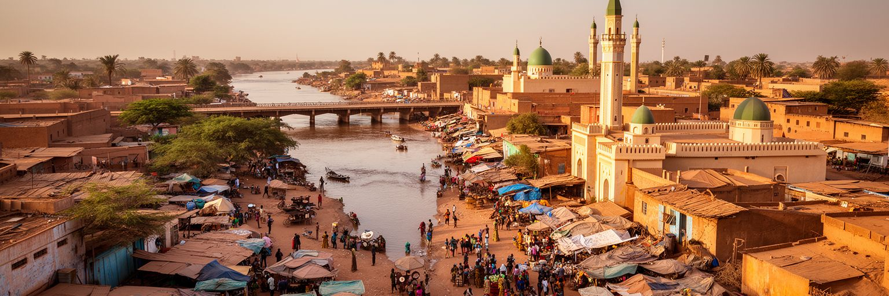
バマコの文化は、イスラムの礼拝とマンデ世界の音楽が近い距離で響くところにあります。大モスクや地区のモスクは、金曜礼拝、ラマダン、タバスキ、家族の慈善を通じて都市の暦を作り、結婚式や命名式ではグリオの歌、コラ、ンゴニ、打楽器、現代ポップが家族の歴史を語ります。バンバラ語は日常の中心で、フランス語、ソンガイ、フラ、トゥアレグ系の言葉、近隣国の言語も市場や学校で交じります。音楽は娯楽にとどまらず、政治、移民、恋愛、宗教、地方出身者の誇りを表す回路です。首都には録音スタジオ、ラジオ、クラブ、婚礼会場、楽器職人、若いラッパーが集まり、伝統と都市の速度を結びます。一方、宗教的な保守性、世代差、女性の表現、夜の興行への視線は、文化の自由をめぐる交渉を生みます。バマコの魅力は、祈りが生活を整え、音楽が社会の感情を外へ出す点にあります。観光客が音を楽しむ時も、それが家族の儀礼、師弟関係、地域の記憶と結びついていることを理解すると、都市の深さが見えてきます。ラジオから流れる歌は市場や乗り合いバスにも届き、都市の共通の気分を作ります。祈りと音楽の距離の近さが、バマコの声を厚くしています。婚礼や命名式に集まる親族の時間は、都市の人間関係を更新する場でもあります。文化は日常の制度です。そこに都市の力があります。
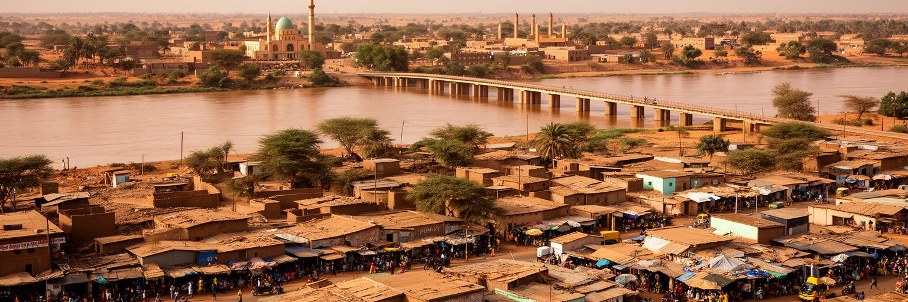
バマコは人口が急増し、住宅地は川の両岸から周辺の丘陵やクーリコロ方面へ広がっています。地方からの移住、大家族、若い世帯、避難してきた人々、学生、公務員、商人が住まいを求めるため、土地価格と家賃は上がりやすく、未整備の地区にも建設が進みます。正式な区画と非公式な分譲が混ざる場所では、水道、排水、電力、学校、診療所、道路、廃棄物収集が追いつかないことがあります。通勤はソトラマと呼ばれるミニバス、タクシー、バイク、徒歩、自家用車に依存し、橋や幹線道路の渋滞が生活時間を奪います。雨季には泥道や浸水が通学と商いを止め、乾季には砂ぼこりが健康を脅かします。住宅問題は建物の数だけでなく、働く場所への距離、女性や子どもの安全、公共交通、土地権利、排水計画と結びつきます。都市が外へ広がるほど、中心部の官庁や市場に近い人と遠い人の差は大きくなります。バマコの暮らしを読むには、華やかな中心だけでなく、朝の橋、乗り合いバスの待ち時間、井戸や水道に並ぶ時間を見る必要があります。住まいの安定は、教育と健康の土台です。新しい区画が生まれるたび、学校や診療所が同じ速さで届くとは限りません。都市計画の遅れは、家族の時間と安全に直接現れます。住民が長く住める地区を作るには、土地、交通、水、学校を同時に考える必要があります。
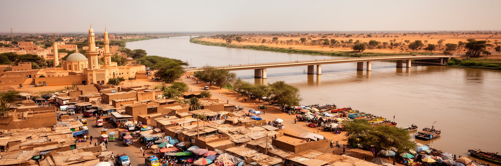
バマコの気候は、長い乾季と強い雨季の差が大きく、都市インフラを毎年試します。乾季には高温、砂ぼこり、水需要、停電への不安が増し、屋外労働者や通学する子ども、高齢者の体に負担がかかります。雨季には激しい雨が排水路をあふれさせ、低地の住宅、未舗装道路、市場、交通、廃棄物管理を直撃します。ニジェール川は都市に水と景観を与えますが、水質汚染、岸辺の無秩序な利用、洪水リスクも抱えます。水道の拡張、井戸や給水点の管理、排水路の清掃、ごみの収集、湿地の保全は、気候適応の基本です。気候変動で高温と極端な降雨が強まれば、貧しい世帯ほど被害を受けやすくなります。日陰のある道路、涼しい学校、保健所へのアクセス、雨の日も通れる橋と道路は、都市の公平さを測る指標です。国際的な気候資金や援助の計画も、住民が実感できる排水、給水、廃棄物処理へ届かなければ信頼されません。バマコでは、水を管理することが、交通、健康、住宅、教育、商いを同時に守ることになります。小さな排水溝の詰まりが、都市全体の弱さを映します。暑さを避ける日陰や市場の屋根も、気候に強い都市づくりの一部です。大きなダムや道路だけでなく、近所の水回りが生活の安心を決めます。気候への備えは、行政だけでなく住民の清掃や情報共有にも支えられます。日々続きます。今も。
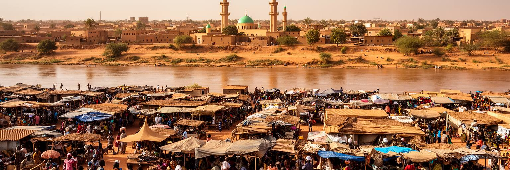
バマコは非常に若い国の首都であり、学校、大学、職業訓練、通信、音楽、政治情報、仕事探しが集中します。地方から来た学生や若い労働者は、親族の家に身を寄せ、学費、交通費、携帯料金、食費を調整しながら将来を探します。公務員、銀行、通信、国際機関、建設、商業、運転、警備、飲食、修理、デジタルサービス、海外移住は、若者が考える進路の候補です。しかし安定した雇用は限られ、資格と実務経験、人脈、資金、語学、治安の影響が進路を左右します。女性の進学と就労には、家事負担、安全な移動、早婚への圧力、学校の費用も関わります。若者はSNSや音楽で政治と社会への意見を示しますが、表現の自由や治安への不安も意識します。教育が都市の仕事と結びつかなければ、首都への期待は失望へ変わります。反対に、職業訓練、起業支援、図書館、スポーツ施設、公共交通、女性の安全が整えば、若い人口は都市の力になります。バマコの未来は、若者が国外へ出ることだけを夢にせず、国内でも尊厳を持って働ける選択肢を作れるかにかかっています。教室と市場の距離を縮める政策が必要です。小さな修理店や携帯サービス、音楽制作の現場にも、学びを仕事へ変える実験があります。若者の工夫を制度が支えられるかが鍵です。学び直しの場が増えれば、都市の不安は少しずつ技能へ変わります。
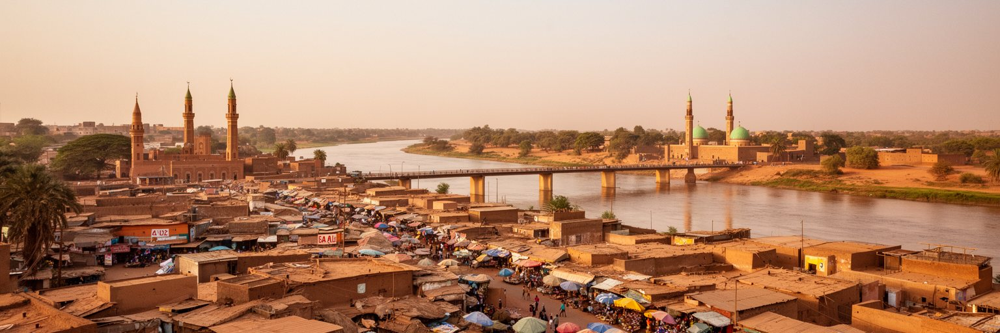
バマコ観光は、マリ国立博物館、大モスク、職人市場、川岸、丘からの眺め、音楽の夜、布や革細工の工房を組み合わせて進みます。トンブクトゥ、ジェンネ、ドゴン地方などの世界的な文化遺産へ向かう入口として知られてきましたが、治安悪化により地方観光が難しくなる時期には、首都そのものの文化を丁寧に読むことが重要になります。国立博物館では考古資料、織物、仮面、楽器、建築模型が、サヘルとマンデ世界の長い歴史を示します。市場では職人、商人、ガイド、運転手、飲食店が観光収入に関わりますが、価格の透明性、安全な移動、撮影の礼儀、地元に利益が残る仕組みが欠かせません。観光は派手な名所だけでは成立しません。植民地期の記憶、独立後の政治、イスラムの生活、音楽家の系譜、川と橋の都市形成を理解すると、バマコは通過点ではなく読み応えのある首都になります。旅行者にとって安全情報の確認は必要ですが、過度に危険だけで都市を見ると、住民の文化と日常を見落とします。短い滞在でも、博物館、市場、音楽、川岸を結ぶことで、マリの多層的な時間に触れられます。案内人の説明を聞き、工房で手仕事の時間を見れば、首都観光は消費だけでなく文化への敬意になります。安全と敬意を両立する歩き方が大切です。街の説明を住民自身が担えるほど、観光の収益も誇りも残ります。
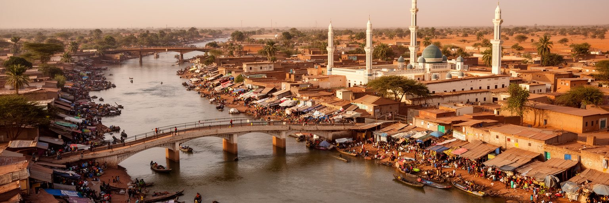
バマコは移動する人々の都市です。地方からの進学、仕事探し、医療、避難、親族訪問に加え、コートジボワール、セネガル、ギニア、モーリタニア、欧州へ向かう移民の情報と送金が首都に集まります。バスターミナル、送金窓口、携帯マネー、旅行会社、親族の家、市場の仕入れ網は、人とお金の流れを支えます。海外や近隣国で働く家族からの送金は、学費、医療費、住宅建設、小商い、結婚式、葬儀を支える重要な資金です。一方で、移住には危険なルート、借金、家族の期待、帰国後の再就職という負担もあります。国内避難民や治安の悪い地域から来た人々は、住まい、学校、仕事、身分証明、支援へのアクセスで難しさを抱えます。都市の成長はこうした移動に支えられますが、受け入れの制度が弱いと、周辺地区の貧困と緊張が深まります。バマコを読むには、街に住む人だけでなく、遠くから仕送りをする人、地方に残る家族、季節ごとに移動する商人を含めて考える必要があります。送金で建つ家や開く店は、首都の景観に国境を越えた労働の記憶を刻みます。移動は都市の弱さであり、同時に強さでもあります。駅やバス乗り場の別れと再会は、家族経済の節目でもあります。人が動く理由を聞くほど、首都の地図は国境の外へ広がります。送金の窓口は、遠い労働と今日の食卓を結んでいます。今も。
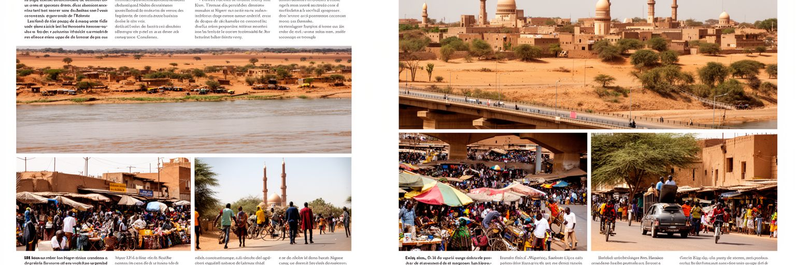
バマコは、経済規模だけでなく、内陸西アフリカの課題が集中する首都として読む必要があります。ニジェール川の橋、官庁街、市場、バスターミナル、大学、モスク、音楽スタジオ、郊外住宅は、別々の風景に見えて、同じ都市の力と弱さを示しています。サヘルの治安悪化、軍政後の移行、国際関係の変化、金と綿花の経済、若い人口、移民と送金、気候リスクは、すべてバマコの日常に入り込みます。首都は国の希望を集める場所ですが、仕事、住宅、水、電気、排水、交通、教育が追いつかなければ、希望は不満へ変わります。それでも、市場の交渉、家族の支え、宗教の慈善、音楽の表現、若者の学びは、都市を前へ動かします。バマコを歩く時は、名所だけでなく、橋の混雑、雨季の泥、送金窓口、結婚式の音、露店の値段、警備の緊張を見ることが大切です。そこに、巨大ではないが重い責任を負う首都の姿があります。川沿いの都市は、内陸国が世界とどうつながり、市民が不安の中でどう生活を作るかを教えてくれます。バマコはマリの入口であり、サヘルの未来を具体的な街路で考える場所です。都市の価値は摩天楼の数ではなく、困難な条件の中で公共サービスと文化を保てるかに表れます。小さな改善が、首都全体の信頼を少しずつ作ります。橋、市場、水、音楽を一緒に見ることで、都市の輪郭が立ち上がります。